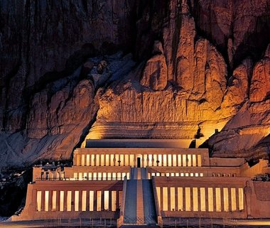

Egyptian stability is in stark contrast to the Ancient Near East of the same period, which endured an overlapping series of cultures and upheavals with amazing regularity. The earliest royal monuments, such as the Narmer Palette carved around 3100 B.C.E., display identical royal costumes and poses as those seen on later rulers, even Ptolemaic kings on their temples 3000 years later. A vast amount of Egyptian imagery, especially royal imagery that was governed by decorum (a sense of what was ‘appropriate’), remained stupefyingly consistent throughout its history. This is why, especially to the untrained eye, their art appears extremely static—and in terms of symbols, gestures, and the way the body is rendered, it was. It was intentional. The Egyptians were aware of their consistency, which they viewed as stability, divine balance, and clear evidence of the correctness of their culture. This consistency was closely related to a fundamental belief that depictions had an impact beyond the image itself—tomb scenes of the deceased receiving food, or temple scenes of the king performing perfect rituals for the gods—were functionally causing those things to occur in the divine realm. If the image of the bread loaf was omitted from the deceased’s table, they had no bread in the Afterlife; if the king was depicted with the incorrect ritual implement, the ritual was incorrect and this could have dire consequences. This belief led to an active resistance to change in codified depictions. The earliest recorded tourist graffiti on the planet came from a visitor from the time of Ramses II who left their appreciative mark at the already 1300-year-old site of the Step Pyramid at Saqqara, the earliest of the massive royal stone monuments. They were understandably impressed by the works of their ancestors and endeavored to continue that ancient legacy.
 Egypt is a land of duality and cycles, both in topography and culture. The geography is almost entirely rugged, barren desert, except for an explosion of green that straddles either side of the Nile as it flows the length of the country. The river emerges from far to the south, deep in Africa, and empties into the Mediterranean sea in the north after spreading from a single channel into a fan-shaped system, known as a delta, at its northernmost section. The influence of this river on Egyptian culture and development cannot be overstated—without its presence, the civilization would have been entirely different, and most likely entirely elsewhere. The Nile provided not only a constant source of life-giving water, but created the fertile lands that fed the growth of this unique (and uniquely resilient) culture. Each year, fed by melting snows in the far-off headlands, the river overflowed its banks in an annual flood that covered the ground with a rich, black silt and produced incredibly fertile fields. The Egyptians referred to this as Kemet, the “black lands,” and contrasted this dense, dark soil against the Deshret, the “red lands” of the sterile desert; the line between these zones was (and in most cases still is) a literal line. The visual effect is stark, appearing almost artificial in its precision.
The civilization of Egypt obviously did not spring fully formed from the Nile mud; although the massive pyramids at Giza may appear to the uninitiated to have appeared out of nowhere, they were founded on thousands of years of cultural and technological development and experimentation. "Dynastic" Egypt —sometimes referred to as "Pharaonic" (after "pharaoh," the Greek title of the Egyptian kings derived from the Egyptian title per aA, "Great House") which was the time when the country was largely unified under a single ruler, begins around 3100 B.C.E. The period before this, lasting from about 5000 B.C.E. until unification, is referred to as Predynastic by modern scholars. Prior to this were thriving Paleolithic and Neolithic groups, stretching back hundreds of thousands of years, descended from northward migrating homo erectus who settled along the Nile Valley. During the Predynastic period, ceramics, figurines, mace heads, and other artifacts such as slate palettes used for grinding pigments, begin to appear, as does imagery that will become iconic during the Pharaonic era—we can see the first hints of what is to come. It is important to recognize that the dynastic divisions modern scholars use were not used by the ancients themselves. These divisions were created in the first Western-style history of Egypt, written by an Egyptian priest named Manetho in the 3rd century B.C.E. Each of the 33 dynasties included a series of rulers usually related by kinship or the location of their seat of power. Egyptian history is also divided into larger chunks, known as "kingdoms" and "periods," to distinguish times of strength and unity from those of change, foreign rule, or disunity.